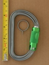

| Image | Summary | ||||
|---|---|---|---|---|---|
| Petzl Am'D Ball Lock (metal sleeve v1) | asymmetric D | full-auto | press-and-twist | press-and-twist unlock | |
 | Petzl Am'D Ball Lock (metal sleeve v1b) | asymmetric D | full-auto | press-and-twist | press-and-twist unlock |
| Petzl Am'D Ball Lock (metal sleeve v2) | asymmetric D | full-auto | press-and-twist | 3rd generation of Petzl's press-and-twist unlock | |
 | Petzl Am'D Ball Lock (plastic sleeve v1) | asymmetric D | full-auto | press-and-twist | plastic sleeve button-lock |
 | Petzl Am'D Ball Lock (plastic sleeve v2) | asymmetric D | full-auto | press-and-twist | plastic sleeve button-lock |
 | Petzl Am'D Ball Lock (plastic sleeve v2b gold) | asymmetric D | full-auto | press-and-twist | plastic sleeve button-lock |
|  | Petzl Am'D Pin Lock | asymmetric D | full-auto | press-and-twist | requires tool to unlock |
 | Petzl Am'D Spinball | asymmetric D | assisted | press-and-twist | manual version of ball-lock |
| Petzl Am'D Triact (v1 gold) | asymmetric D | full-auto | lift-and-twist | classic triple-action | |
| Petzl Am'D Triact (v1 plum) | asymmetric D | full-auto | lift-and-twist | classic triple-action | |
| Petzl Am'D Triact-Lock (H-frame) | asymmetric D | full-auto | lift-and-twist | 2nd generation body of a classic locking carabiner |